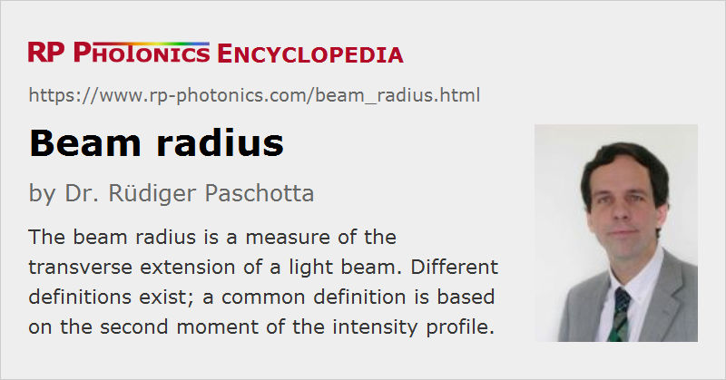

Beam Radius
Definition: a measure of the transverse extension of a light beam
German: Strahlradius
Formula symbol: w
Units: m
How to cite the article; suggest additional literature
Author: Dr. Rüdiger Paschotta
The definition of the radius of a laser beam with a flat-top profile is trivial, but most light beams have other transverse shapes. A frequently obtained shape is the Gaussian one, where the transverse intensity variation is described with the following equation:
where the beam radius w is the distance from the beam axis where the optical intensity drops to 1/e2 (≈ 13.5%) of the value on the beam axis. At this radius, the electric field strength drops to 1/e (≈ 37%) of the maximum value.
The usual formula symbol of the beam radius is w. Some authors use ω instead, but that may be confused with an angular frequency.
For arbitrary (possibly not Gaussian) beam shapes, several different definitions are common. It is possible to still use the 1/e2 intensity criterion, or a full width at half-maximum (FWHM), or a radius including 86% of the beam energy, etc. The problem with this type of definitions is essentially that the result does not depend on, e.g., how quickly the intensity decays in the wings of the profile. To illustrate this, Figure 1 shows two intensity profiles which have the same FWHM width, although the dashed curve is clearly wider in a meaningful sense. In the case of complicated intensity patterns, it is even more obvious that an FWHM definition cannot be appropriate.
For such reasons (and another reason, which is discussed below), the recommended definition is that of ISO Standard 11146, based on the second moment of the intensity distribution I(x,y). For example, the beam radius in the x direction is
where the coordinates x and y must be taken to be relative to the beam center, i.e., such that the first moments vanish. The method is also called the D4σ method, because for the beam diameter, one obtains 4 times the standard deviation of the intensity distribution.
One can define the beam radius wy in an analogous fashion, just replacing x2 with y2 in the upper integral.
For Gaussian beams, the D4σ method gives the same result as the 1/e2 method, whereas for other beam shapes there can be significant deviations. The D4σ method should be used particularly when trying to predict the evolution of the beam radius for not diffraction-limited beams. It has been shown that the usual rules for Gaussian beam propagation with a certain M2 factor then correctly describe this evolution, whereas errors occur when using beam radii defined in some other way. This is important to observe e.g. when designing the pump optics of a diode-pumped laser, because clearly non-Gaussian beam shapes can occur.
Disadvantages of the second-moment method are that the beam radius calculation is somewhat complicated (it usually requires numerical code), and that the result is quite sensitive to the intensity of the outer parts of the profile. For example, it is easily compromised by some vertical offset in the measured intensity distribution (e.g. caused by ambient light) and by noise of the camera. A detector with high dynamic range is therefore required. Often one also uses special smoothing techniques for reducing measurement errors.
In the context of laser-induced damage, one often uses an effective beam area, which is defined as the optical power divided by the maximum intensity, and is considered to be π times the effective beam radius squared. For a Gaussian beam, that effective beam radius is smaller than the Gaussian beam radius by a factor square root of 2.
The beam diameter is generally defined as twice the beam radius – no matter what the particular definition of beam radius is. For Gaussian beams, the FWHM beam diameter is 1.18 times the Gaussian beam radius (1/e2 value).
For the measurement of beam radii, various kinds of beam profilers exists.
Questions and Comments from Users
Here you can submit questions and comments. As far as they get accepted by the author, they will appear above this paragraph together with the author’s answer. The author will decide on acceptance based on certain criteria. Essentially, the issue must be of sufficiently broad interest.
Please do not enter personal data here; we would otherwise delete it soon. (See also our privacy declaration.) If you wish to receive personal feedback or consultancy from the author, please contact him e.g. via e-mail.
By submitting the information, you give your consent to the potential publication of your inputs on our website according to our rules. (If you later retract your consent, we will delete those inputs.) As your inputs are first reviewed by the author, they may be published with some delay.
Bibliography
| [1] | H. Kogelnik and T. Li, “Laser beams and resonators”, Appl. Opt. 5 (10), 1550 (1966), doi:10.1364/AO.5.001550 |
| [2] | P. A. Bélanger, “Beam propagation and the ABCD ray matrices”, Opt. Lett. 16 (4), 196 (1991), doi:10.1364/OL.16.000196 |
| [3] | ISO Standard 11146, “Lasers and laser-related equipment – Test methods for laser beam widths, divergence angles and beam propagation ratios” (2005) |
See also: mode radius, Gaussian beams, beam divergence, beam quality, beam profilers, The Photonics Spotlight 2007-07-11
and other articles in the category general optics
|  |
If you like this page, please share the link with your friends and colleagues, e.g. via social media:
These sharing buttons are implemented in a privacy-friendly way!